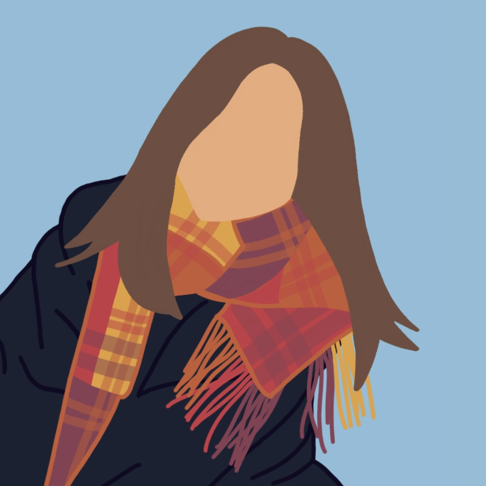

Hello! My name is Mandy and I am a freshman in the College of Engineering @ UW. I was born in China 🇨🇳 and moved to the US at a young age, and have been living in Seattle for the past 10 years. Some of my hobbies are cooking 🧑🍳, drawing 🎨, canoeing, playing badminton🏸, and hanging out with my friends. In the summer, I spent a lot of time outdoors because I love being in the sun and the sun is super rare here. One of my favorite activities in the summer was walking my best friend's dog, Benji 🐶. Other than that, I am also a huge foodie, and Ilove eating food from different regions of the world, with East Asian cuisine being my favorite (🥘🍱🍜🍛🍣🥟). I am excited for the next four years of college and I can't wait for all the cool things I will learn and experience, just like learning how to make this website💻! That's all for now, and maybe I'll add to this after I turn the assignment in hahaha :)
*All photos are my own.